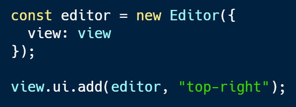

<!DOCTYPE html>
<html lang="en">
  <head>
    <meta charset="utf-8" />
    <meta name="viewport" content="width=device-width, initial-scale=1.0, maximum-scale=1.0, user-scalable=no" />

    <title>European Developer Summit 2019: ArcGIS API for JavaScript Presentations</title>
    <meta property="og:title" content="European Developer Summit 2019: ArcGIS API for JavaScript Presentations" />
    <meta property="og:type" content="website" />
    <meta property="og:image" content="https://jsapi.dev/2019-11-devsummit-eu-presentations/featured-slide.jpg" />
    <meta property="og:url" content="https://jsapi.dev/2019-11-devsummit-eu-presentations" />
    <meta name="description" content="European Developer Summit 2019: ArcGIS API for JavaScript Presentations">
    <meta property="og:description" content="European Developer Summit 2019: ArcGIS API for JavaScript Presentations">
    <link rel="stylesheet" href="./css/reveal.css" />
    <link rel="stylesheet" href="./css/theme/black.css" id="theme" />
    <!-- <link rel="stylesheet" href="./css/highlight/railscasts.css" /> -->
    <link rel="stylesheet" href="./css/print/paper.css" type="text/css" media="print" />
    <link rel="stylesheet" href="./assets/style.css" />

    <script src="https://cdnjs.cloudflare.com/ajax/libs/animejs/2.0.2/anime.min.js"></script>
  </head>
  <body>
    <div class="reveal">
      <div class="slides"><section  data-markdown><script type="text/template"><!-- .slide: data-background="./images/working-with-feature-layers/bg-1.png" -->

<h1 style="text-align: left; font-size: 80px;">Working with Feature Layers</h1>
<h2 style="text-align: left; font-size: 60px;">in the ArcGIS API for JavaScript</h2>
</br>
<p style="text-align: left; font-size: 30px;">Julie Powell | Arno Fiva</p>
</script></section><section  data-markdown><script type="text/template">
<!-- .slide: data-background="./images/working-with-feature-layers/bg-2.png" -->

## Agenda

</br>

* Bringing in your data
* Rendering
* Labeling
* Querying
* Building an interactive experience
</script></section><section  data-markdown><script type="text/template">
<!-- .slide: data-background="./images/working-with-feature-layers/bg-3.png" -->

## Feature Layers 101

* Rendered in 2D or 3D
* Limited to one geometry type per layer
* Geometries & attributes on client
* Loads only the attributes needed for rendering
* Can be created from a feature service or client-side graphics
* Used for editing
</script></section><section  data-markdown><script type="text/template">
<!-- .slide: data-background="./images/working-with-feature-layers/bg-3.png" -->

## Feature Layer powered by:

* [Feature Services](https://developers.arcgis.com/javascript/latest/sample-code/layers-featurelayer/index.html)
* [Portal Item](https://developers.arcgis.com/javascript/latest/sample-code/layers-portal/index.html)
* [Feature Collections](https://developers.arcgis.com/javascript/latest/sample-code/layers-featurelayer-collection/index.html)
</script></section><section  data-markdown><script type="text/template">
<!-- .slide: data-background="./images/working-with-feature-layers/bg-3.png" -->

## FeatureLayer by URL

```ts
const layer = new FeatureLayer({
  url: "https://<url to my server>/FeatureServer",
  layerId: 0,
  renderer: { ... },
  popupTemplate: { ... },
});

map.add(layer);
```

[Demo: Layer with a popup](./samples/working-with-feature-layers/1_bringing_data/1_byUrl_with_popup.html) | [Demo: Layer with LayerList](./samples/working-with-feature-layers/1_bringing_data/1_byUrl.html)
</script></section><section  data-markdown><script type="text/template">
<!-- .slide: data-background="./images/working-with-feature-layers/bg-3.png" -->

## FeatureLayer by URL

Restrict data retrieved from the feature service

* to work with a subset of features
* to remove features with `null` attributes.

```ts
layer.definitionExpression = "STATE_NAME = 'California'";
```

[Demo](./samples/working-with-feature-layers/1_bringing_data/2_byUrl_definitionExpression.html)
</script></section><section  data-markdown><script type="text/template">
<!-- .slide: data-background="./images/working-with-feature-layers/bg-3.png" -->

## FeatureLayer by portalItem

```ts
const portal = new Portal({
  url: "https://jsapi.maps.argis.com"
});

const layer = new FeatureLayer({
  portalItem: {
    id: "bca022ee5d9440c9b60399ee4d809d9b",
    portal
  }
});

map.add(layer);
```

[Demo: from a layer item](./samples/working-with-feature-layers/1_bringing_data/3_byPortalItem.html)
</script></section><section  data-markdown><script type="text/template">
<!-- .slide: data-background="./images/working-with-feature-layers/bg-3.png" -->

## FeatureLayer by Layer.fromPortalItem()

```ts
Layer.fromPortalItem({
  portalItem: {
    id: "82d8d8213afc4bb380bb16083735f573"
  }
})
.then((layer) => {
  map.add(layer);
});
```

[Demo](https://codepen.io/julie_powell/pen/yLLomyK)
</script></section><section  data-markdown><script type="text/template">
<!-- .slide: data-background="./images/working-with-feature-layers/bg-3.png" -->

## FeatureLayer by WebMap

Load a web map, then find the feature layer:
```ts
var webmap = new WebMap({
  portalItem: {
    id: "6b45a53c27034003aee8825550abf749"
  }
});

webmap.when(function () {
  treesLayer = webmap.layers.find(layer => layer.title === "Berlin Trees");
  ...
```
</script></section><section  data-markdown><script type="text/template">
<!-- .slide: data-background="./images/working-with-feature-layers/bg-3.png" -->

## FeatureLayer by client-side graphics

1. Set the source (array of graphics).

2. Specify schema (name, alias, and type) of attributes.

3. Set the objectID field property to a field containing unique IDs

[Demo](./samples/working-with-feature-layers/1_bringing_data/5_byClientsideGraphics.html)
</script></section><section  data-markdown><script type="text/template">
<!-- .slide: data-background="./images/working-with-feature-layers/bg-3.png" -->

## Rendering

A renderer defines how the `FeatureLayer` is drawn.

* SimpleRenderer
* ClassBreaksRenderer
* UniqueValueRenderer
* HeatmapRenderer
* DotDensityRenderer
* DictionaryRenderer

Guides are available in the API:

* [Visualization Overview guide](https://developers.arcgis.com/javascript/latest/guide/visualization-overview/)
* [Renderer API reference](https://developers.arcgis.com/javascript/latest/api-reference/esri-renderers-Renderer.html)
</script></section><section  data-markdown><script type="text/template">
<!-- .slide: data-background="./images/working-with-feature-layers/bg-3.png" -->

## Building a renderer

* [simple renderer](./samples/working-with-feature-layers/2_visualization/1_simple-renderer.html)
* [visual variables](./samples/working-with-feature-layers/2_visualization/2_visual-variables.html)
* [extrude in 3D](./samples/working-with-feature-layers/2_visualization/2_visual-variables.html)
* [smart mapping APIs](./samples/working-with-feature-layers/2_visualization/3_smart-mapping.html)
* [smart mapping sliders](./samples/working-with-feature-layers/2_visualization/4_slider.html)
<!-- * [loading from portal](./samples/working-with-feature-layers/2_visualization/5_portal-item.html) -->
</script></section><section  data-markdown><script type="text/template">
<!-- .slide: data-background="./images/working-with-feature-layers/bg-3.png" -->

## Labeling

</br>

Label features to show relevant information at a glance

</br>

* [simple labels](./samples/working-with-feature-layers/3_labeling/1_simple_label.html)
* [where clause](./samples/working-with-feature-layers/3_labeling/2_where_label.html)
* [multiple labels classes](./samples/working-with-feature-layers/3_labeling/3_multiple_label_classes.html)
* [min/max scale ranges](./samples/working-with-feature-layers/3_labeling/4_scaled_labels.html)
* [labels in 3D scenes](./samples/working-with-feature-layers/3_labeling/3d_labels.html)
</script></section><section  data-markdown><script type="text/template">
<!-- .slide: data-background="./images/working-with-feature-layers/bg-3.png" -->

## Query the data from the server

Bring features from your data to the web browsers.

* <h4>Attribute queries</h4><small>select only features passing a WHERE SQL clause</small>
* <h4>Spatial queries</h4><small>select only features passing a spatial filter</small>
* <h4>Statistic queries</h4><small>returns statistics about the selected features</small>

[API Reference](https://developers.arcgis.com/javascript/latest/api-reference/esri-tasks-support-Query.html)
</script></section><section  data-markdown><script type="text/template">
<!-- .slide: data-background="./images/working-with-feature-layers/bg-3.png" -->

## Query the data from the server

* [queryFeatures()](./samples/working-with-feature-layers/5_query/1_query_features.html)
* [queryFeatures() - by distance](./samples/working-with-feature-layers/5_query/2_query_features_by_distance.html)
* [queryFeatures() - pagination](./samples/working-with-feature-layers/5_query/3_query_features_pagination.html)
</script></section><section  data-markdown><script type="text/template">
<!-- .slide: data-background="./images/working-with-feature-layers/bg-3.png" -->

## Query the data client-side

Query data already in the web browser

* really fast queries
* avoid round-trips to server
* only works with what is available
</script></section><section  data-markdown><script type="text/template">
<!-- .slide: data-background="./images/working-with-feature-layers/bg-3.png" -->

## Query the data client-side
<ul>
  <li>

  `LayerView` are created automatically, but _asynchronously_

  </li>
  <li>

  Use [`view.whenLayerView()`](https://jscore.esri.com/javascript/latest/api-reference/esri-views-SceneView.html#whenLayerView) to obtain the LayerView for a layer

  </li>
</ul>

```ts
var layer = new FeatureLayer({ ... });
view.map.add(layer);

// API will now create LayerView (async)

view
  .whenLayerView(layer)
  .then((layerView) => {
    // do something with the LayerView
    layerView.filter = { ... };
  });
```
<!-- .element: style="width: 50%; left: 50%; " -->
</script></section><section  data-markdown><script type="text/template">
<!-- .slide: data-background="./images/working-with-feature-layers/bg-3.png" -->

## Building an interactive experience

* Client-side filter & querying
* Filter & effects
* Time
* Editing
</script></section><section  data-markdown><script type="text/template">
<!-- .slide: data-background="./images/working-with-feature-layers/bg-3.png" -->

## Client-side capabilities on `Layerview`

</br>

* [Filter features by geometry](https://developers.arcgis.com/javascript/latest/sample-code/sandbox/index.html?sample=layers-scenelayer-feature-masking)
* [Query features by geometry](https://developers.arcgis.com/javascript/latest/sample-code/sandbox/index.html?sample=layers-scenelayerview-query-stats)

</br>
</script></section><section  data-markdown><script type="text/template">
<!-- .slide: data-background="./images/working-with-feature-layers/bg-3.png" -->

## Filter & effects

* Define filter criteria
* Emphasize features, and/or
* Deemphasize features
</script></section><section  data-markdown><script type="text/template">
<!-- .slide: data-background="./images/working-with-feature-layers/bg-3.png" -->

## Time

* Time slider widget
* Data must have a date field
* Control the view's time extent
* Can filter or just apply an effect
</script></section><section  data-markdown><script type="text/template">
<!-- .slide: data-background="./images/working-with-feature-layers/bg-3.png" -->

## Editing

</br>

Updating features directly in the web browser
</br>
</br>
</script></section><section  data-markdown><script type="text/template">
<!-- .slide: data-background="./images/working-with-feature-layers/bg-3.png" -->

## Editing

</br>

How do I know if I can edit features?
</br>
</br>
* [REST Supported Operations](https://services.arcgis.com/V6ZHFr6zdgNZuVG0/ArcGIS/rest/services/Thrift_Shops/FeatureServer/0)
* [ArcGIS Online / Portal Settings](https://jsapi.maps.arcgis.com/home/item.html?id=104c2a112e2242f69ac6bf5fb636cf04)
* ArcGIS Server Manager
</script></section><section  data-markdown><script type="text/template">
<!-- .slide: data-background="./images/working-with-feature-layers/bg-3.png" -->

## Editing

</br>

Two ways to edit features:

</br>

* [applyEdits()](https://developers.arcgis.com/javascript/latest/sample-code/editing-applyedits/live/index.html)

</br>
</br>

* [Editor widget](https://developers.arcgis.com/javascript/latest/sample-code/widgets-editor-basic/live/index.html)
</script></section><section  data-markdown><script type="text/template">
<!-- .slide: data-background="./images/working-with-feature-layers/bg-3.png" -->

## Editor widget

</br>



</br>
</br>

[sample](https://developers.arcgis.com/javascript/latest/sample-code/popup-editaction/live/index.html)

</br>
</br>
</script></section><section  data-markdown><script type="text/template">
<!-- .slide: data-background="./images/working-with-feature-layers/bg-2.png" -->

# Questions?
</script></section><section  data-markdown><script type="text/template">
<!-- .slide: data-background="./images/working-with-feature-layers/alias_slide.png" -->
</script></section><section  data-markdown><script type="text/template">
<!-- .slide: data-background="./images/working-with-feature-layers/bg-5.png" -->
</script></section></div>
    </div>

    <script src="./js/reveal.js"></script>

    <script>
      function extend() {
        var target = {};
        for (var i = 0; i < arguments.length; i++) {
          var source = arguments[i];
          for (var key in source) {
            if (source.hasOwnProperty(key)) {
              target[key] = source[key];
            }
          }
        }
        return target;
      }

      // Optional libraries used to extend on reveal.js
      var deps = [
        { src: './plugin/markdown/marked.js', condition: function() { return !!document.querySelector('[data-markdown]'); } },
        { src: './plugin/markdown/markdown.js', condition: function() { return !!document.querySelector('[data-markdown]'); } },
        // { src: './plugin/highlight/highlight.js', async: true, callback: function() { hljs.initHighlightingOnLoad(); } },
        { src: './plugin/zoom-js/zoom.js', async: true },
        { src: './plugin/notes/notes.js', async: true },
        { src: './plugin/math/math.js', async: true },
        { src: './prism/plugin.js', async: true }
      ];

      // default options to init reveal.js
      var defaultOptions = {
        controls: true,
        progress: true,
        history: true,
        center: true,
        transition: 'default', // none/fade/slide/convex/concave/zoom
        dependencies: deps
      };

      // options from URL query string
      var queryOptions = Reveal.getQueryHash() || {};

      var options = extend(defaultOptions, {"transition":"none","backgroundTransition":"none","width":1366,"height":768}, queryOptions);
    </script>


    <script>
      Reveal.initialize(options);

      // Define default background
      // for (var slide of document.getElementsByTagName('section')){
      //   if (!(slide.getAttribute('data-background') ||
      //         slide.getAttribute('data-background-video') ||
      //         slide.getAttribute('data-background-iframe') ||
      //         slide.getAttribute('data-background-image'))){
      //     slide.setAttribute('data-background', 'images/bg-2.png');
      //     slide.setAttribute('data-background-image', 'images/bg-2.png');
      //   }
      // }

      Reveal.addEventListener('ready', function(event) {
        addEventListener("message", function(event) {
          if (event.data && event.data.type === "fullscreen") {
            if (document.webkitCurrentFullScreenElement) {
              document.webkitExitFullscreen();
              return;
            }
            var iframes = document.querySelectorAll("iframe");
            for (var i = 0; i < iframes.length; i++) {
              var iframe = iframes[i];
              if (iframe.contentWindow === event.source) {
                iframe.webkitRequestFullscreen();
                return;
              }
            }
          }
        });

        var playButtons = document.querySelectorAll('[data-play-frame]');

        for (var i = 0; i < playButtons.length; i++) {
          playButtons[i].addEventListener('click', (function(frameName, argument) {
            return function(event) {
              event.stopPropagation();
              event.preventDefault();
              window.frames[frameName].contentWindow.postMessage({ play: true, argument: argument }, '*');
            };
          })(playButtons[i].getAttribute('data-play-frame'), playButtons[i].getAttribute("data-play-argument")));
          playButtons[i].addEventListener('mousedown', function(event) {
            event.preventDefault();
            event.stopPropagation();
          });
        }
      });

      Reveal.addEventListener( 'slide-animation-title', function() {
        var textWrapper = document.getElementById('letters');
        textWrapper.innerHTML = textWrapper.textContent.replace(/\S/g, "<span class='letter'>$&</span>");

        var textWrapper = document.getElementById('animation');
        textWrapper.innerHTML = textWrapper.textContent.replace(/\S/g, "<span class='letter'>$&</span>");

        anime({
            targets: '.letter',
            scale: [0.3,1],
            opacity: [0,1],
            translateZ: 0,
            easing: "easeOutExpo",
            duration: 600,
            delay: (el, i) => 1000 + 70 * (i+1)
          });
    } );
    </script>
  </body>
</html>
